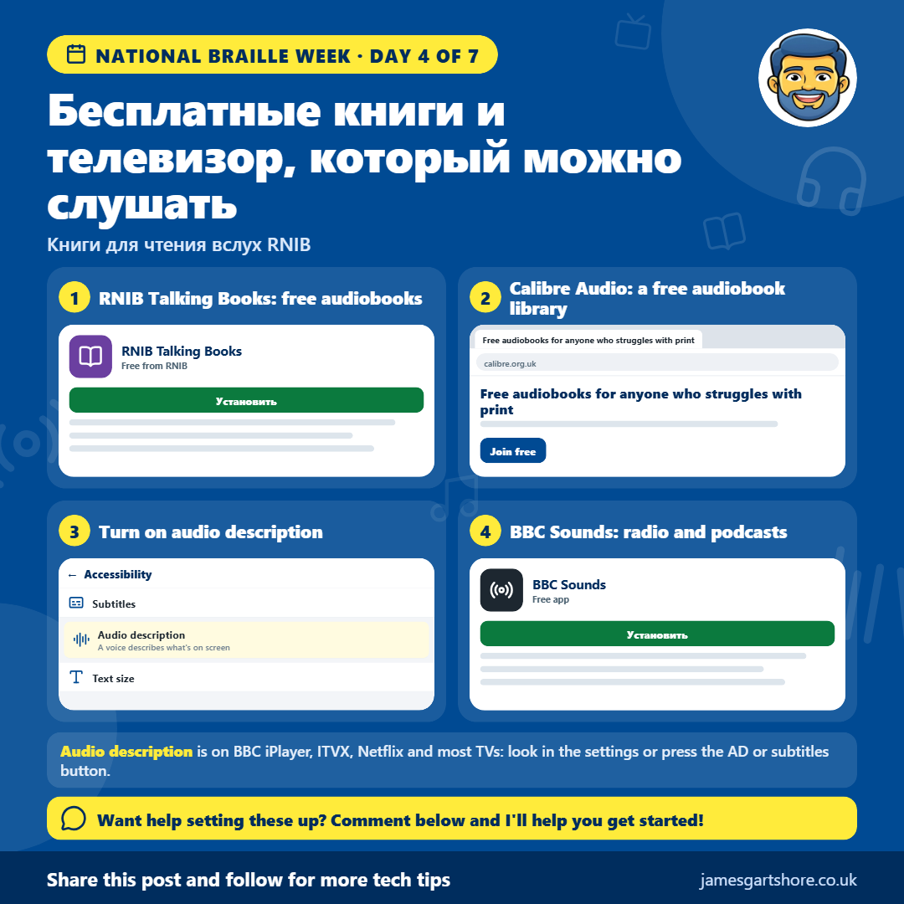

Braille Week Day 4
От Джеймса Гертшора · · Здоровье и благополучие
Привет всем, сегодня четвертый день Национальной недели Брайля, и сегодня советы касаются книг, радио и ТВ, которые вы можете наслаждаться, слушая.
Книги для чтения по слуху RNIB — это бесплатный сервис для людей с нарушением зрения в Великобритании. Вы можете выбрать из тысяч аудиокниг, от бестселлеров до классики, и слушать их на своем телефоне, умной колонке или на USB-накопителе или CD, отправленном по почте бесплатно.
Calibre Audio — еще одна бесплатная библиотека аудиокниг для всех, кому трудно читать печатные книги. Это включает людей с нарушением зрения, а также такие вещи, как дислексия или состояния, которые мешают держать книгу. Вы можете узнать больше на calibre.org.uk.
При просмотре телевизора аудиоописание может иметь большое значение. Это голос, который описывает, что происходит на экране, например, выражения лиц людей или то, что они делают, в паузах между речью. BBC iPlayer, ITVX, Netflix и большинство других сервисов предлагают его на многих программах, а на большинстве современных телевизоров есть настройка, чтобы включить его для обычных телевизионных каналов тоже.
А BBC Sounds — это бесплатное приложение с живым радио, подкастами и аудиокнигами, все в одном месте, и оно хорошо работает с голосовыми помощниками и программами для чтения экрана.
Если вам нужна помощь с настройкой чего-либо из этого, просто напишите мне сообщение, и я постараюсь помочь.
Надеюсь, это поможет, и не стесняйтесь передавать это всем, кому это может быть полезно.